The main impact of a 200 basis-point (2.00 percentage-point) rise in United States interest rates on Italy is a 0.019% drop in GDP by the 11th quarter — a minimal spillover, ranking 30th of the countries covered. This is a small, slow-building hit rather than a dramatic one: the first-quarter GDP effect is just −0.0009%, the trough arrives only in Q11, and by Q20 the drag has faded to −0.0047%. For a large, open economy with deep financial ties to the US, the headline result is that a US tightening shock barely moves Italian output on this model's IRFs.
Demand and trade. Household consumption is the largest domestic demand component and it follows the GDP path closely, peaking at −0.0076% in Q11 before fading to −0.0016% by Q20. Private investment is hit harder and earlier, peaking at −0.0534% in Q10 as the cost of capital rises, then easing to −0.0117% by Q20. Net exports — the trade balance, since this model does not split imports from exports — actually improve, peaking at +0.1019% in Q14 and still +0.0895% at Q20. Government spending edges up slightly, peaking at +0.0041% in Q11, and government debt rises marginally, peaking at +0.001% in Q11 before settling to +0.0002% by Q20. So the domestic demand drag is partly offset by a stronger trade balance.
External / FX. The real exchange rate — currency strength — appreciates steadily, peaking at +0.5958% in Q16 and remaining near +0.5858% at Q20. That is the key external channel: a stronger real effective currency makes Italian exports relatively more expensive, which is consistent with the improving net export balance only if import compression dominates, or if the trade balance is being driven by weaker domestic absorption rather than export competitiveness. Either way, the currency appreciation is the largest and most persistent external effect in the set.
Labour. Employment falls gradually, peaking at −0.008% in Q14 and still −0.005% at Q20. Unemployment rises in mirror image, peaking at +0.0066 percentage points in Q13 and remaining +0.0038pp at Q20. Real wages, by contrast, rise throughout, reaching +0.1013% by Q20 — the largest positive series in the set. That combination of falling employment and rising real wages is consistent with weaker domestic inflation rather than a tight labour market.
Prices. CPI inflation rises modestly, peaking at +0.0185 percentage points in Q8 and fading to +0.0009pp by Q20. Domestic inflation follows a similar but smaller path, peaking at +0.0129pp in Q8 and easing to +0.0006pp by Q20. Firms' marginal cost falls, peaking at −0.0112% in Q11 and still −0.0027% at Q20. The inflation response is small and short-lived, and the marginal cost decline suggests the price pressure is not coming from domestic cost-push.
Financial conditions. The local policy rate does not move at all — it is 0.00pp throughout, so the ECB is assumed not to respond to the US shock in this simulation. Government 2-year, 5-year, and 10-year yields are likewise unchanged at 0.00pp across all quarters. Bond prices fall sharply, peaking at −0.7525% in Q8 before recovering to −0.0271% by Q20 — the largest negative financial effect. Equity prices fall in parallel, peaking at −0.2606% in Q8 and easing to −0.0166% by Q20. Tobin's Q — the value of installed capital — falls, peaking at −0.0374% in Q10 and still −0.0082% at Q20. House prices decline slowly and persistently, peaking at −0.0149% in Q18 and still −0.0146% at Q20. Bank credit supply contracts modestly, peaking at −0.005% in Q16 and remaining −0.0044% at Q20. Lending spreads widen only marginally, peaking at +0.0001pp in Q16. The financial channel is dominated by the bond price and equity declines, with credit and spreads barely moving.
Sectoral and capital. Services GDP falls, peaking at −0.0138% in Q11 and fading to −0.0034% by Q20. Manufacturing GDP is hit far harder, peaking at −0.1743% in Q17 and still −0.1729% at Q20 — by far the largest output effect in the set, and one that does not fade. The capital stock declines very gradually, peaking at −0.0027% by Q20, reflecting the persistent investment drag.
Timing. The GDP hit is largest in Q11 at −0.019%, and it has mostly faded by Q20, when it stands at −0.0047%. The equity and bond price effects peak earlier, in Q8, and fade by Q15. Manufacturing GDP, by contrast, peaks late in Q17 and shows almost no fading by Q20 — the one series that stays down.
Close. These are model impulse responses versus baseline, not forecasts. They describe how Italy's macro variables deviate from their baseline path after a 200bp US rate rise, holding the ECB policy rate fixed. The story is a minimal GDP spillover, a persistent currency appreciation, a sharp but temporary bond and equity repricing, and a manufacturing sector that takes the largest and most lasting hit.
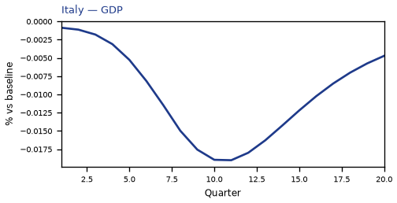
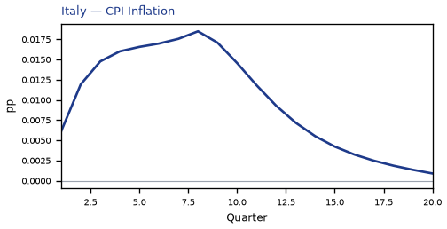
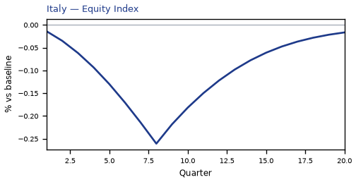
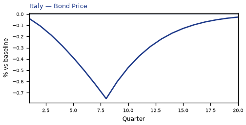
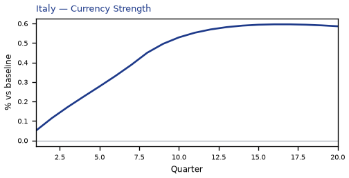
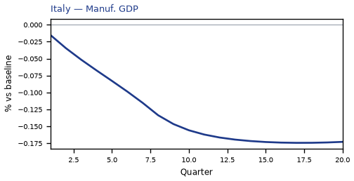
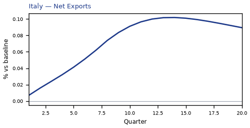
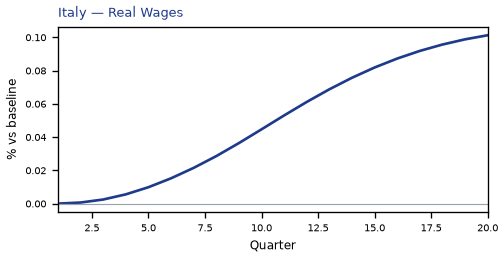
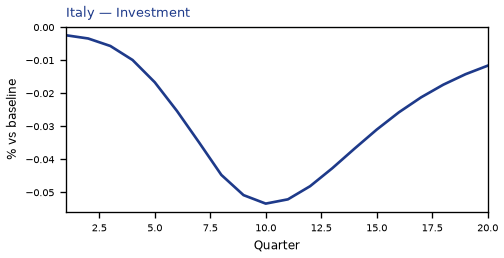
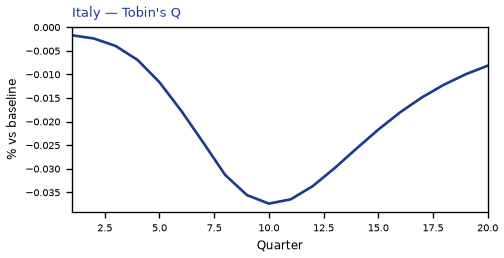
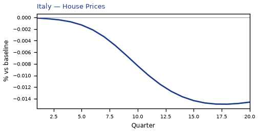
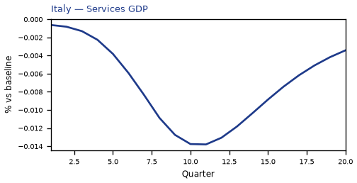
source=live · global_macro_v5 · contract v6 · Q1–Q20 JSON · not financial advice